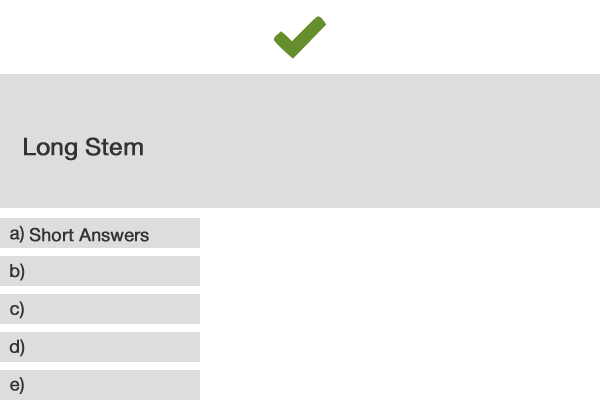
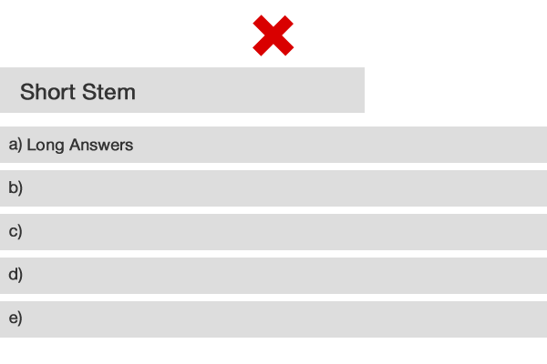

Multiple-Choice Question Guidelines
Item Composition General Guidelines


General Guidelines for Item Construction
- Make sure the item can be answered without looking at the options OR that the options are 100% true or false.
- Include as much of the item as possible in the stem; the stems should be long and the options short./li>
- Avoid superfluous information.
- Avoid tricky and overly complex items.
- Write options that are grammatically consistent and logically compatible with the stem; list them in logical or alphabetical order. Write distractors that are plausible and the same relative length as the answer.
- Avoid using absolutes such as always, never, and all in the options; also avoid using vague terms such as usually and frequently.
- Avoid negatively phrased items (e.g., those with except or not in the lead-in). If you must use a negative stem, use only short (preferably single word) options.
- And most importantly of all: focus on important concepts—cause & effect; don’t waste time testing trivial facts.
Summary of Technical Item Flaws
- Grammatical cues - One or more distractors don’t follow grammatically from the stem
- Logical cues - a subset of the options is collectively exhaustive
- Absolute terms - terms such as “always” or “never” are in some options
- Long correct answer - correct answer is longer, more specific, or more complete than other options
- Word repeats - a word or phrase is included in the stem and in the correct answer
- Convergence strategy - the correct answer includes the most elements in common with the other options
Issues Related to Irrelevant Difficulty
- Options are long, complicated, or double
- Numeric data are not stated consistently
- Terms in the options are vague (e.g., “rarely,” “usually”)
- Language in the options is not parallel
- Options are in a non-logical order
- “None of the above” is used as an option
- Stems are tricky or unnecessarily complicated
- The answer to an item is “hinged” to the answer of a related item
Mini-Course Standards
- Each correct and incorrect answer should have its own specific feedback
- Each item should have at least one variation of presentation/type (if possible)